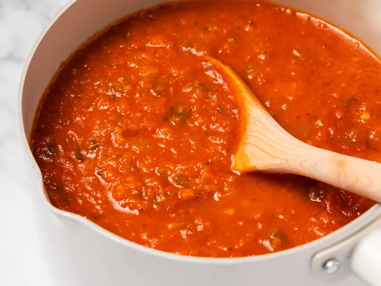

Homemade Sauce
Home

Fresh Pasta Sauce From Scratch
This red 'Sunday Sauce' boasts sweet, acidic flavors of native Italian San Marzano tomatoes, combined
with sauteed onions, fresh garlic, and basil, this sauce will be the perfect addition to fresh pasta
or meatballs. This sauce can also be used in any of your favorite classics, such as lasagna, ravioli,
and rigatoni.
- 2 14-16 oz cans whole San Marzano tomatoes
- 1 large white onion, diced (may subsitute shallots)
- 1/3 cup fresh basil
- 3 tsp oregano (to taste)
- 4 garlic cloves, finely diced or minced
- 2 tsp fresh ground pepper
- 2 tsp salt
- 2 tbs olive oil
- Prep all ingredients before beginning.
- In a large sauce pan or pot, heat olive oil to low-medium heat.
- Cook onion until translucent (this is a low-and-slow process; be patient).
- Once onions are translucent, toss in garlic and cook until fragrant.
- Add both cans of San Marzano tomatoes. Use a spatula or potato masher to crush tomatoes. Mix with onions and garlic until combined.
- Using an immersion blender, blend mixture until well-combined and smooth.
- Tear basil leaves and toss in sauce mixture, along with salt and pepper. Bring to a slow boil, and reduce to simmer for about 45-60 minutes, stirring frequently.
- When stirring, this is a good time to add salt, pepper, and/or oregano to improve the taste to your liking.
- Once sauce has reached desired taste, serve with pasta, meatballs, or can for long-term storage.